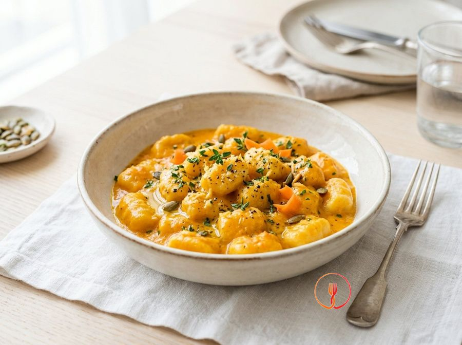

Gnocchi di Patate con Salsa alle Carote e Zenzero
Una salsa vellutata e leggermente speziata che trasforma i classici gnocchi in un piatto moderno e vivace. Il costo è irrisorio e il sapore è sorprendente.
Un primo piatto vivace che unisce la morbidezza degli gnocchi a una crema setosa di carote e zenzero. Il contrasto tra la dolcezza dell'ortaggio e la nota leggermente piccante della radice crea un equilibrio moderno. La guarnizione di sesamo aggiunge una piacevole componente croccante.
Ingredienti
- Gnocchi di patate freschi800 g
- Carote400 g
- Zenzero fresco15 g
- Latte intero100 ml
- Cipolla bianca1/2 pz
- Olio extravergine d'oliva20 ml
- Semi di sesamo1 cucchiaio
- Saleq.b.
Allergeni
Glutine, Latte, Sesamo
Procedimento
- Inizia la preparazione pelando accuratamente 400 g di carote e tagliandole a rondelle molto sottili, cercando di mantenere uno spessore uniforme per garantire una cottura omogenea. Trita finemente mezza cipolla bianca su un tagliere stabile utilizzando un coltello da chef ben affilato. Questa operazione preliminare richiede circa 5 minuti e deve produrre vegetali pronti per essere stufati. Il risultato deve essere un trito pulito e profumato, senza pezzi eccessivamente grossolani. Consiglio dello chef: taglia le carote in diagonale per aumentare la superficie di contatto con il calore, velocizzando così l'intenerimento delle fibre.
- In un pentolino capiente, versa 20 ml di olio extravergine d'oliva e scalda a fiamma media per circa un minuto. Aggiungi la cipolla tritata e le carote a rondelle, lasciandole rosolare dolcemente per 4-5 minuti senza che prendano colore. Mescola costantemente con un cucchiaio di legno per distribuire il calore in modo uniforme e attivare gli aromi della cipolla. Le carote dovranno apparire lucide e la cipolla dovrà diventare leggermente traslucida e morbida. Consiglio dello chef: se vedi che la cipolla tende a bruciare, aggiungi un cucchiaio d'acqua calda per abbassare la temperatura e continuare la cottura in modo dolce.
- Versa nel pentolino acqua calda a sufficienza fino a coprire completamente le carote e aggiungi un pizzico di sale. Copri con un coperchio, abbassa la fiamma e lascia cuocere per circa 15 minuti o finché le carote non risulteranno molto tenere se forate con una forchetta. Controlla il livello dell'acqua di tanto in tanto per assicurarti che non si asciughi troppo, mantenendo una bollitura leggera e costante. Otterrai delle carote stufate dal colore arancione intenso, immerse in un fondo di cottura saporito. Consiglio dello chef: non buttare l'acqua di cottura delle carote, poiché è ricca di nutrienti e sapore fondamentale per regolare la densità della salsa.
- Mentre le carote cuociono, prepara lo zenzero fresco pelando circa 15 g di radice con il dorso di un cucchiaino per rimuovere solo la sottile pelle esterna. Grattugia finemente la polpa utilizzando una grattugia a fori stretti, cercando di raccogliere anche il succo che ne fuoriesce. Tieni da parte lo zenzero grattugiato in una ciotolina pronto per essere unito alla crema. Il profumo dello zenzero dovrà essere pungente e fresco, tipico della radice appena lavorata. Consiglio dello chef: grattugia lo zenzero direttamente sopra una ciotola per non perdere gli oli essenziali che sono la parte più aromatica del rizoma.
- Scola le carote tenendo da parte la loro acqua di cottura e trasferiscile nel bicchiere di un frullatore a immersione. Aggiungi 100 ml di latte intero a temperatura ambiente e lo zenzero grattugiato, quindi frulla alla massima velocità fino a ottenere una crema perfettamente liscia e vellutata. Se la consistenza dovesse risultare troppo densa, aggiungi gradualmente un po' dell'acqua di cottura messa da parte fino a raggiungere la fluidità desiderata. Dovresti ottenere una salsa color arancio brillante, lucida e priva di grumi. Consiglio dello chef: per una texture da ristorante stellato, passa la crema attraverso un colino a maglie fini (chinoise) per eliminare ogni residuo fibroso delle carote o dello zenzero.
- Trasferisci la crema ottenuta in una padella molto ampia, ideale per saltare gli gnocchi successivamente, e regola di sale secondo il tuo gusto. Scalda la salsa a fuoco bassissimo per mantenerla calda, evitando però di portarla a bollore forte per non alterare la delicatezza del latte. Assaggia la salsa per verificare l'equilibrio tra la dolcezza delle carote e la nota piccante dello zenzero. La salsa deve apparire cremosa, calda e avvolgente. Consiglio dello chef: se desideri un tocco di acidità che contrasti la dolcezza, aggiungi poche gocce di succo di limone alla fine della preparazione della salsa.
- Porta a bollore una pentola capiente con abbondante acqua e, solo quando bolle vigorosamente, aggiungi il sale grosso. Tuffa delicatamente gli 800 g di gnocchi di patate freschi, evitando di sovraccaricare la pentola per non abbassare drasticamente la temperatura dell'acqua. Mantieni la fiamma vivace e osserva gli gnocchi: saranno pronti non appena saliranno a galla spontaneamente, operazione che richiederà circa 2-3 minuti. Il risultato saranno gnocchi morbidi ma con la giusta consistenza, pronti per essere mantecati. Consiglio dello chef: preleva gli gnocchi con una schiumarola man mano che salgono a galla, senza scolarli tutti insieme nello scolapasta per evitare che si schiaccino.
- Trasferisci gli gnocchi cotti direttamente nella padella con la salsa alle carote e zenzero utilizzando la schiumarola. Accendi il fuoco a intensità medio-bassa e amalgama delicatamente con movimenti circolari o saltando la padella per circa un minuto, assicurandoti che ogni gnocco sia uniformemente rivestito dalla crema. Se la salsa si restringe troppo, aggiungi un cucchiaio di acqua di cottura degli gnocchi per mantenere la cremosità. Dovrai vedere un piatto perfettamente legato, dove la salsa aderisce bene alla superficie degli gnocchi. Consiglio dello chef: non mescolare con troppa energia per non rompere gli gnocchi, che sono estremamente delicati a causa dell'umidità della salsa.
- Impiatta immediatamente distribuendo gli gnocchi in quattro piatti fondi caldi, avendo cura di nappare la superficie con la salsa rimasta in padella. Decora ogni porzione cospargendo un cucchiaio di semi di sesamo (diviso tra i piatti) per aggiungere una nota croccante e visivamente gradevole. Servi subito mentre il piatto emana tutto il suo profumo agrumato e speziato. Il risultato finale è un primo piatto elegante, equilibrato nei sapori e vivace nei colori. Consiglio dello chef: tosta leggermente i semi di sesamo in un padellino antiaderente per pochi secondi prima di servirli per sprigionarne al massimo l'aroma tostato.
Consigli
- Utilizza uno zenzero fresco e sodo, pelandolo con il dorso di un cucchiaino per evitare sprechi.
- Frulla le carote con un po' di latte caldo fino a ottenere una consistenza perfettamente liscia.
- Tosta leggermente i semi di sesamo in padella prima di aggiungerli per sprigionarne tutto l'aroma.
Varianti
- Prova a sostituire il latte intero con una bevanda vegetale non zuccherata per una versione più leggera.
- Puoi aggiungere della scorza di lime grattugiata al momento di servire per enfatizzare la freschezza dello zenzero.
Valori nutrizionali (stima)
| Per porzione (345 g) | Per 100 g | |
|---|---|---|
| Energia | 1774 kJ / 424 kcal | 514 kJ / 123 kcal |
| Proteine | 9.2 g | 2.7 g |
| Carboidrati | 74.8 g | 21.7 g |
| di cui zuccheri | 5.4 g | 1.6 g |
| Grassi | 9.1 g | 2.6 g |
| di cui saturi | 1.6 g | 0.5 g |
| Fibre | 4.2 g | 1.2 g |
| Sale | 1.1 g | 0.3 g |
Valori stimati con l'AI su dati medi CREA / USDA: sono indicativi e non sostituiscono il parere di un medico o di un nutrizionista.
Apri la ricetta nell'app per la lista della spesa, le schede ingredienti e i negozi vicini.